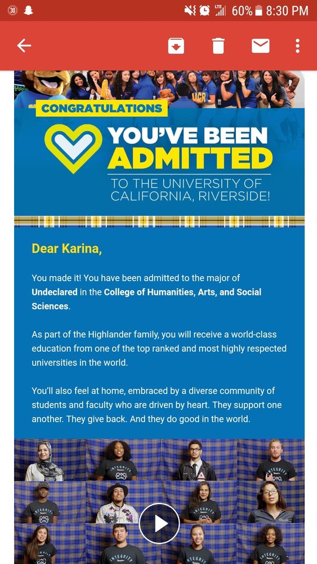

Karina Campos Munoz
My name is Karina Campos. I was born and raised in San Jose, California. I am currently 19 years old and I am a Anthropology major studying at the University of California Riverside. Being of Chicana background I aspire to attend graduate school and use my degree to help my community. I have experienced discrimination and injustice as part of a minority and I wish to use anthropology as a tool to show what my community truly is. My life has built me to be a perservering, dedicated and brave student.
I grew up in a low-income, predominantly hispanic and vietnamese community. I am the first in my immediate family to attend college. I am also the first to have graduated high school. My community has built me to be the student I am because it has taught me how important it is for me to keep pushing and succeed in my academic journey. I realize how important it is for there to be positive role models for the kids of my community. Many of the people I grew up with either dropped out of high-school, joined gangs, had kids, or got a regular minimum wage paying 9-5 job. This is the common path taken by many in my community due to lack of opportunity and support.
Growing up like this, I was able to realize how lucky I am to have my family and friends supporting me. I am able to take advantage of all the opportunities that come my way and always do the best I can. As a student and worker I have a lot to offer. I am a great team worker, leader, problem solver and people-person. When in times of pressure, I am very good at keeping calm, I can be a great mediator and will always work to solve any problem in my way as fast and diligently as possible. I am eager to learn and improve in any way possible.
Experience
Assistant
• Filed documents
• Assisted patients
• Answered calls, scheduled appointments
Education
UC Riverside
Portfolio

.jpg)